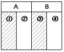
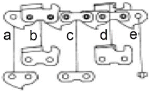

산림기능사 (2005-04-03 기출문제)
1과목: 조림 및 육림기술
1. 종자를 채취하기 위한 모수로서 가장 적당한 임목은?
- 유령목
- 장령목
- 노령목
- 치수림
(정답률: 74%)

2. 파종상의 해가림 시설을 제거하는 시기는?
- 5월 중순 - 6월 중순
- 7월 하순 - 8월 중순
- 9월 중순 - 10월 상순
- 10월 중순 - 11월 중순
(정답률: 75%)
3. 묘목의 식재순서를 바르게 나열한 것은?
- 지피물 제거→구덩이 파기→묘목 삽입→흙 채우기→다지기
- 구덩이 파기→흙 채우기→묘목 삽입→다지기
- 지피물 제거→구덩이 파기→흙 채우기→묘목 삽입→다지기
- 구덩이 파기→묘목 삽입→다지기→흙 채우기
(정답률: 96%)
4. 택벌작업의 장점이 아닌 것은?
- 경관 조성
- 건전한 생태계 유지
- 토양 침식 조장
- 보속적인 생산
(정답률: 88%)
5. 토양의 물리적 성질을 좋게 하고, 유익한 미생물의 활동을 도와 묘목 생장을 건전하게 하는 비료는?
- 퇴비
- 질소비료
- 인산비료
- 칼륨비료
(정답률: 77%)
6. 종자의 발아력 조사에 쓰이는 약제는?
- 염소산나트륨
- 황산화탄소
- 테트라졸륨(tetrazolium)
- 인돌낙산
(정답률: 82%)
7. 인공갱신에 대한 설명 중 가장 옳은 것은?
- 천연 치수에 의하여 임분을 형성시킨다.
- 개벌작업에 의한 갱신을 말한다.
- 무육 작업을 말한다.
- 묘목을 식재하여 임분을 형성시킨다.
(정답률: 61%)
8. 다음 중 간벌의 효과가 아닌 것은?
- 숲을 건강하게 만든다.
- 나무의 생육을 촉진시킨다.
- 중간 수입을 얻을 수 있다.
- 재적 생장은 증가하지 않으나 형질 생장은 증가한다.
(정답률: 77%)
9. 2ha의 조림지에 밤나무를 4m×4m의 간격으로 식재하고자 할 때 필요한 묘목수는?
- 약 1,000 본
- 약 1,250 본
- 약 2,500 본
- 약 4,000 본
(정답률: 86%)
10. 침엽수인 경우 묘포의 알맞은 토양 산도는?
- pH 3.0~4.0
- pH 4.0~5.5
- pH 5.0~6.5
- pH 6.0~7.5
(정답률: 85%)
11. 다음 중 상층간벌은?
- A종 간벌
- B종 간벌
- C종 간벌
- D종 간벌
(정답률: 66%)
12. 미래목의 구비 요건이 아닌 것은?
- 적정한 간격을 유지할 것
- 수간이 곧고 수관폭이 좁을 것
- 상층 임관을 구성하고 건전할 것
- 주위 임목보다 월등히 수고가 높을 것
(정답률: 86%)
13. 종자의 밀봉저장을 적용하는데 타당하지 않은 것은?
- 결실주기가 긴 수종에 적용한다.
- 수분 많은 종자에 적용한다.
- 생명력을 쉽게 상실하는 씨앗에 적용한다.
- 연구와 시험을 목적으로 할 때 이용한다.
(정답률: 75%)
14. 잡목솎아내기(제벌) 작업을 처음 시작하는 가장 알맞은 시기는?
- 덩굴치기가 끝난 1~2년 뒤부터
- 밑깎기가 끝난 2~3년 뒤부터
- 가지치기가 끝난 5~6년 뒤부터
- 솎아베기가 끝난 6~9년 뒤부터
(정답률: 60%)
15. 밤나무, 호두나무, 가래와 같은 씨앗의 정선법은?
- 수선법
- 노천매장법
- 입선법
- 풍선법
(정답률: 70%)
16. 임지에 서 있는 성숙한 나무로부터 종자가 떨어져 어린 나무를 발생시키는 갱신 방법은?
- 천연하종갱신
- 인공조림
- 맹아갱신
- 파종조림
(정답률: 91%)
17. 잡목솎아내기(제벌)작업의 가장 적합한 시기는?
- 봄~초여름
- 여름~초가을
- 가을~초겨울
- 겨울~초봄
(정답률: 72%)
18. 수하(樹下) 식재에 관한 설명 중 틀린 것은?
- 수하 식재용 수종으로는 양수 수종으로 척박 토양에 견디는 힘이 강한 것이 좋다.
- 수하 식재는 표토 건조 방지, 지력 증진, 황폐와 유실 방지 등을 목적으로 한다.
- 수하 식재는 주임목의 불필요한 가지 발생을 억제하는 효과도 있다.
- 수하 식재는 임내의 미세환경을 개량하는 효과가 있다.
(정답률: 68%)
19. 생태학적으로 자연생태가 완전히 회복되어 안정된 숲이며, 풍치림으로 중요한 가치를 지니고 있는 숲은?
- 단순림
- 동령림
- 단층림
- 극상천연림
(정답률: 78%)
20. 어떤 삼림을 그림과 같이 띠모양으로 나누고 1983년에 A의①과 B의 ①을 벌채 이용하고,1988년에 A의 ②와 B의 ②를 각각 모두 벌채하였다면 이는 무슨 작업종인가?

- 대상 개벌 작업
- 군상 산벌 작업
- 연속 대상 개벌 작업
- 군생 모수 작업
(정답률: 58%)
21. 우리나라에서 장기용재수의 밀도는 1ha 당 몇 그루인가?
- 1,000그루
- 2,000그루
- 3,000그루
- 4,000그루
(정답률: 63%)
22. 뿌리가 1년, 지상부가 1년 생 된 삽목묘의 올바른 표시법은?
- C 0/2
- C 1/1
- C 1/2
- C 2/1
(정답률: 93%)
23. 다음 중 산벌작업의 장점인 것은?
- 벌채 대상목이 흩어져 있어서 작업이 다소 복잡하다.
- 천연갱신으로만 진행될 때에는 갱신기간이 길어진다.
- 음수의 갱신에 잘 적용될 수 있다.
- 일시에 모두 갱신을 하므로 경제적이다.
(정답률: 59%)
24. 7월 중, 하순에 채취하여 탈각하고 늦어도 8월까지는 파종해야 되는 수종은?
- 버드나무
- 벚나무
- 회양목
- 섬잣나무
(정답률: 71%)
25. 다음 중 천연갱신의 장점이 아닌 것은?
- 환경에 잘 적응된 나무로 구성되어 있다.
- 경비가 거의 들지 않는다.
- 생산된 목재가 균일하다.
- 숲과 땅을 보호한다.
(정답률: 90%)
2과목: 산림보호
26. 바람의 피해를 막기 위한 방풍림에 대한 설명으로 가장 거리가 먼 것은?
- 방풍림의 나비는 10~20m를 보통으로 한다.
- 바람이 불어오는 쪽으로 수고의 30배까지 방풍효과가 있다.
- 바람이 부는 방향으로는 수고의 15~20배까지 방풍효과가 있다.
- 수종은 심근성이고 가지가 밀생하며, 생장이 빠른 것이 좋다.
(정답률: 65%)
27. 소나무 임분에서 발생된 설해목을 일찍 제거하지 못할 때 발생되기 쉬운 해충은?
- 솔나방
- 솔잎혹파리
- 소나무좀
- 솔노랑잎벌
(정답률: 64%)
28. 수목 병해 중 담자균에 의한 수병으로 분류되는 것은?
- 낙엽송잎떨림병
- 잣나무털녹병
- 벗나무빗자루병
- 밤나무줄기마름병
(정답률: 54%)
29. 유충기에 임목의 뿌리를 가해하는 해충은?
- 버들재주나방
- 잣나무넓적잎벌
- 애풍뎅이
- 텐트나방
(정답률: 76%)
30. 밤나무순혹벌을 방제하는 가장 근본적인 방법은?
- 저항성 품종재배
- 살충제 살포
- 피해가지 제거
- 천적벌 보호
(정답률: 69%)
31. 파이토플라스마(Phytoplasma)에 의한 병이 아닌 것은?
- 오동나무빗자루병
- 대추나무빗자루병
- 벚나무빗자루병
- 뽕나무오갈병
(정답률: 85%)
32. 병원체가 상처를 통해서 침입하는 것은?
- 밤나무줄기마름병균
- 소나무잎떨림병균
- 삼나무붉은마름병균
- 향나무녹병균
(정답률: 69%)
33. 산불 발생의 설명으로 틀린 것은?
- 활엽수보다 침엽수에서 산불이 일어나기 쉽다.
- 양수는 음수에 비하여 산불의 위험성이 많다.
- 나이가 많은 큰나무 숲이, 어리고 작은 숲보다 산불의 위험도가 크다.
- 3~5월의 건조 시에 산불이 가장 많이 일어난다.
(정답률: 72%)
34. 다음 중에서 농약 주성분의 농도를 낮추기 위하여 사용 하는 보조제는?
- 전착제
- 유화제
- 증량제
- 용제
(정답률: 71%)
35. 나무껍질을 물어뜯어 그 속에 알을 낳는 곤충들로 짝지어진 것은?
- 솔나방, 흰불나방
- 잎벌, 멸구류
- 메뚜기, 매미
- 하늘소, 나무좀
(정답률: 74%)
36. 다음 중 살충제의 사용형태에 대한 설명 중 틀린 것은?
- 분제살포는 물이 없는 곳에서도 사용할 수 있어 편리 하나 약제의 가격이 좀 비싼 편이며, 액제에 비하여 고착성이 떨어진다.
- 입제는 구형, 원통형 또는 불규칙형 등이 있으며, 입제의 살포는 맨손이나 고무장갑을 끼고 뿌릴 수 있어 편리하다.
- 훈증제는 휘발성이 강한 물질로 독가스를 내게 하는 것으로 보통 밀폐가 가능한 곳에서 사용한다.
- 연무제(煙霧劑) 살포는 살포액 입자를 연무질로 하여 살포하는 것으로 미립자가 오랜 동안 공중에 떠 있을 수 있도록 바람이 부는 오후에 사용하는 것이 특히 효과적이다.
(정답률: 56%)
37. 수목 병해는 병원체의 감염특성으로 인하여 특징적인 병징을 만든다. 아래의 병명 중 바이러스에 의하여 발생되는 병은 무엇인가?
- 흰가루병
- 떡병
- 모자이크병
- 청변병
(정답률: 93%)
38. 다음 중 산성비와 관련된 설명으로 가장 거리가 먼 것은?
- pH 5. 6 이하의 비를 말한다.
- 주로 탄소산화물이 산성비를 일으키는 원인이다.
- 빗물에 녹아 있는 수소이온은 토양 중의 Al, Fe, 중금속의 용해를 증가시킨다.
- 빗물에 녹아 있는 질산염이 잎에 흡수되면 입속의 양분을 용탈시킨다.
(정답률: 55%)
39. 1년 1회 발생하며, 5령충으로 월동하는 것은?
- 솔나방
- 흰불나방
- 짚시나방
- 어스렝이나방
(정답률: 78%)
40. 포플러 잎 뒷면에 초여름 오렌지색의 작은 가루덩이가 생기고 정상적인 나무보다 먼저 낙엽이 지는 현상을 나타내는 나무의 병은?
- 포플러잎녹병
- 포플러갈반병
- 포플러점무늬잎떨림병
- 포플러잎마름병
(정답률: 76%)
3과목: 임업기계일반
41. 체인톱 출력(힘)의 표시로 사용되는 국제단위에는 무엇이 있는가?
- HP
- HA
- HO
- HS
(정답률: 89%)
42. 체인톱의 연료통(또는 연료통 덮개)에 있는 공기구멍이 막혀 있으면 어떤 현상이 나타나는가?
- 연료가 새지 않아 운반 시 편리하다.
- 연료의 소모량을 많게 하여 연료비가 높게 된다.
- 연료를 기화기로 품어 올리지 못해 엔진가동이 안 된다.
- 가솔린과 오일이 분리되어 가솔린만 기화기로 들어간다.
(정답률: 88%)
43. 2행정기관에 사용하는 혼합연료의 취급방법으로 옳은 것은?
- 연료통에 주입하여 사용한다.
- 주입하기 전 잘 흔들어서 혼합한 뒤 주입한다.
- 오일을 다시 추가하여 혼합한 뒤 사용한다.
- 휘발유를 다시 추가하여 사용한다.
(정답률: 89%)
44. 2행정 내연기관에서 연료에 오일을 첨가 시키는 이유로 적합한 것은?
- 체인 회전을 빨리하기 위하여
- 엔진 내부에 윤활작용을 시키기 위하여
- 엔진 회전 속도를 빠르게 하기 위하여
- 체인의 마모를 줄이기 위하여
(정답률: 85%)
45. 인건비의 계산방법 중 간접임금에 해당하지 않는 것은?
- 가족수당
- 연금
- 재해 및 의료 건강비용
- 성과급
(정답률: 53%)
46. 안내판 홈이 달아져서 홈의 간격이 체인 연결쇠(그림의 a)의 두께보다 클 경우에 체인톱 작동 시 압력을 가하면 어떻게 되는가?

- 체인이 가동되지 않고 정지한다.
- 절삭률이 높아져 기계 효율이 높아진다.
- 절삭 방향이 삐뚤어 나갈 위험이 높다.
- 연료 소모량이 높아진다.
(정답률: 81%)
47. 아크야윈치(썰매형윈치)의 혼합연료 제조 시 50ℓ휘발유는 얼마의 엔진오일과 섞어야 하는가?
- 1ℓ
- 2ℓ
- 10ℓ
- 20ℓ
(정답률: 82%)
48. 체인톱 몸체와 체인작동부 사이(체인장력 조정나사가 있는 지점)에 있는 손톱의 날처럼 생긴 스파이크를 절단 작업 시 나무에 박고 작업할 때는 어떤 효과가 있는가?
- 절단이 빨리 된다.
- 진동이 적고 쉽게 작업할 수 있다.
- 체인이 끊어졌을 때 잡아주는 역할을 한다.
- 체인 마모를 감소시켜 준다.
(정답률: 81%)
49. 제벌작업 및 간벌작업 시 간벌목의 표시, 단근작업, 도구 자루제작 등에 사용되는 도끼는?
- 벌목용 도끼
- 가지치기용 도끼
- 장작패기용 도끼
- 손도끼
(정답률: 69%)
50. 다음 중 벌목과 소경목의 집재는 가능하나 지타 및 절단(토막내기)작업을 할 수 없는 고성능 임목수확장비는?(오류 신고가 접수된 문제입니다. 반드시 정답과 해설을 확인하시기 바랍니다.)
- 펠러번쳐
- 하베스터
- 프로세서
- 포워더
(정답률: 51%)
51. 다음 중 도끼자루 제작에 가장 적합한 수종으로 묶어진 것은?
- 소나무, 호도나무, 가래나무
- 호도나무, 가래나무, 물푸레나무
- 가래나무, 물푸레나무, 전나무
- 물푸레나무, 소나무, 전나무
(정답률: 78%)
52. 다음 중 산림작업의 안전사고 발생 원인이 아닌 것은?
- 계획 없이 일을 서둘러 할 때
- 안일한 생각으로 태만히 작업을 할 때
- 과로하거나 과중한 작업을 수행할 때
- 위험을 예측하고 겸손한 태도를 지녔을 때
(정답률: 88%)
53. 체인톱 체인의 일시 보관 시 어떻게 하면 체인 수명을 연장하고 파손을 예방할 수 있는가?
- 가솔린통에 넣어 둔다.
- 석유통에 넣어 둔다.
- 오일(윤활유)통에 넣어 둔다.
- 구리스통에 넣어 둔다.
(정답률: 83%)
54. 2행정 내연기관에서 최초 시동을 할 경우 쵸크(choke) 시키는 이유로 적합한 것은?
- 연료와 공기 혼합비를 높이기 위하여
- 연료가 많이 혼합되는 것을 막기 위하여
- 오일이 적정하게 혼합되도록 하기 위하여
- 연료 소모량을 줄이기 위하여
(정답률: 78%)
55. 다음 4 행정 기관의 작동 순서를 나타낸 것 중 옳은 것은 어느 것인가?
- 흡입 → 폭발 → 압축 → 배기
- 흡입·압축 → 폭발·배기
- 흡입 → 압축 → 배기 → 폭발
- 흡입 → 압축 → 폭발 → 배기
(정답률: 83%)
56. 손톱의 톱니 높이가 일정하지 않고 높고 낮은 톱니가 있을 경우 나타나는 현상은?
- 톱질이 힘들어 작업 능률이 낮아진다.
- 톱이 원하는 방향으로 나가지 않고 비틀려 나간다.
- 절단면이 깨끗하게 절단되지 않는다.
- 톱의 수명이 길어진다.
(정답률: 74%)
57. 다음 기계·기구 중 소경목 벌목 조재에 적합치 않은 것은?
- 쐐기와 스프링 들게
- 체인톱과 햄머
- 도끼와 끌게
- 큰이리톱 또는 활톱
(정답률: 38%)
58. 체인톱 체인의 깊이 제한부 역할이 아닌 것은?
- 절삭된 톱밥을 밀어낸다.
- 절삭깊이를 조절한다.
- 절삭 폭을 조절한다.
- 절삭 각도를 조절한다.
(정답률: 47%)
59. 다음 중 체인톱날 세우기 각도로 올바른 것은?
- 반끌형 가슴각 80°
- 끌형 가슴각 80°
- 반끌형 창날각 30°
- 끌형 창날각 35°
(정답률: 51%)
60. 체인톱 엔진이 고속 상태에서 갑자기 정지하였다면 그이유로 가장 적합한 것은?
- 연료 탱크가 비어 있다.
- 에어필터가 더럽혀 있다.
- 기화기 조절이 잘못되어 있다.
- 클러치가 손상되어 있다.
(정답률: 69%)